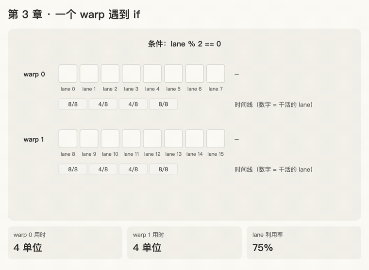

第 3 章 · warp 与 SIMT：32 个线程一起走，分岔了怎么办
本地运行
git clone https://github.com/wikieden/cuda-to-tensor-core
cd cuda-to-tensor-core/code/notebooks
pip install jupyterlab torch numpy
jupyter lab ch03_warp_divergence.ipynb也可以下载后直接用 VS Code 打开 .ipynb 运行。需要 GPU 的章节在 Colab 里选「代码执行程序 → 更改运行时类型 → GPU」。
本章回答：block 里的线程真的是各跑各的吗？什么是 warp？
if语句让一个 warp 里的线程走了不同的路，会发生什么、慢多少？为什么 block 大小要取 32 的倍数？
讲解日期：2026-11-14 · 上一章：第 2 章 block 调度 · 下一章：第 4 章 一个完整的 CUDA 程序
对应原文：PG §1.2.2.2 Warps and SIMT（materials/text/cuda-programming-guide.txt第 1077–1171 行）、§3.2.2.1 SIMT Execution Model 与 Independent Thread Scheduling（第 8645–8715 行）；Oxford lec3（text/oxford-lec3.txt，控制流与同步）本章缩写：SIMT = Single Instruction, Multiple Threads（单条 / 指令、多个 / 线程）· SIMD = Single Instruction, Multiple Data（单条指令、多个数据，CPU 向量指令的模型）· CC = Compute Capability（计算 / 能力，GPU 架构版本号，如 9.0 = Hopper）
讲解
第一步：warp——一个班长喊口令，32 个人一起做（2026-11-14）
PG §3.2.2.1：SM 以 32 个线程为一组来创建、调度和执行线程，这一组叫 warp（这个词来自纺织：经线，"最早的并行线程技术"）。
类比：广播体操。 一个班 32 个人，班长喊一个口令，32 个人同时做同一个动作。硬件每次给一个 warp 发一条指令，32 个线程同时执行它，只是每个线程用自己的数据（自己的寄存器、自己的 i）。
这就是 SIMT（单条指令、多个线程）：
- 写代码时，你写的是一个线程的逻辑（第 1 章："从单个线程的角度来写"）；
- 执行时，硬件把 32 个线程捆在一起，一条指令驱动 32 份数据。
和 CPU 的 SIMD 有什么区别？（PG §3.2.2.1 原文）SIMD 把向量宽度暴露给程序员：你得自己把 8 个 float 装进一个向量寄存器、自己处理"有的元素要算、有的不算"。SIMT 则让你写普通的标量代码，每个线程可以有自己的分支，硬件负责把它们捆起来执行、负责处理分岔。PG 的比喻：warp 宽度就像 cache line 大小——写对程序时可以完全不管，想跑快就必须考虑。
第二步：分岔（warp divergence）——一半人原地等（2026-11-14）
如果代码里有 if，同一个 warp 里有的线程条件为真、有的为假，怎么办？口令只能喊一个。PG §1.2.2.2 的回答：
warp 把每条走到的分支都执行一遍；执行某条分支时，不走这条路的线程被屏蔽（masked off），原地等。
数字演示：
if (threadIdx.x % 2 == 0)
x = a(); // 设耗时 10 个单位
else
x = b(); // 设耗时 10 个单位
一个 warp 32 个线程，偶数号 16 个走 a()，奇数号 16 个走 b()：
- 先执行
a()：偶数号干活，奇数号屏蔽——10 个单位； - 再执行
b()：奇数号干活，偶数号屏蔽——10 个单位； - 两条路汇合后，32 个线程重新一起走。
总共 20 个单位，而没有分岔时只要 10 个单位。每一时刻只有一半线程在干活，效率 50%。
关键：分岔只发生在 warp 内部（PG §3.2.2.1："Branch divergence occurs only within a warp"）。把条件改成按 warp 分组：
if ((threadIdx.x / 32) % 2 == 0) x = a(); else x = b();
线程 0–31（warp 0）全走 a()，线程 32–63（warp 1）全走 b()。每个 warp 内部都没有分岔，两个 warp 各自独立执行，没有浪费。同样是"一半线程走 a、一半走 b"，只是分法不同，效率差一倍。
常见的分岔来源：
| 写法 | 分岔吗 |
|---|---|
if (i < n) 越界检查 |
只有最后一个 warp 可能分岔，其他 warp 全真，代价可以忽略 |
if (threadIdx.x % 2 == 0) |
每个 warp 都分岔，浪费一半 |
if (threadIdx.x < 16) |
warp 0 分岔；其他 warp 全假，跳过 |
按数据值分支，如 if (x[i] > 0) |
取决于数据，随机数据时几乎每个 warp 都分岔 |
| 循环次数因线程而异 | 整个 warp 要等最慢的那个线程跑完 |
第三步：block 大小为什么取 32 的倍数（2026-11-14）
block 被切成 warp 时，按线程号每 32 个一组（第 2 章）。block 有 100 个线程：
前 3 个 warp 满员，第 4 个 warp 只有 100 − 96 = 4 个线程，另外 28 个 lane（车道）从头到尾空着，但这个 warp 照样占一个调度名额、照样每条指令发一次。算力利用率 100 / 128 = 78%。
所以 PG §1.2.2.2 建议 block 线程数取 32 的倍数。
第四步：Volta 以后——每个线程有自己的程序计数器（2026-11-14）
PG §3.2.2.1.1 Independent Thread Scheduling：
- CC 7.0（Volta）之前，一个 warp 只有一个程序计数器，32 个线程严格齐步走；
- CC 7.0 起，每个线程有自己的程序计数器和调用栈，硬件可以在 warp 内更细粒度地分开、再汇合。
带来的一个坑：老代码常常默认 warp 内 32 个线程永远齐步走（"warp-synchronous"），比如 warp 内归约不加同步。在新 GPU 上这个假设不成立，结果可能出错。PG 的要求：需要 warp 内同步时，显式调用 __syncwarp()，或者用带 _sync 后缀、带 mask 参数的 warp 函数（第 11 章的 __shfl_down_sync）。
还要记住一句（PG Note）：同一个 warp 里多个线程用普通写写同一个地址，最后留下哪个线程的值是未定义的；要都算进去必须用原子操作（第 11 章）。
动画演示：一个 warp 遇到 if

可交互版：animations/03-warp-divergence.html。开关：分支条件（lane % 2 == 0 / lane < 4 / warp % 2 == 0；画面把 32 个 lane 缩成 8 个，所以 lane < 16 对应这里的 lane < 4）。
怎么看：
- 上面是 2 个 warp、每个 8 个 lane（为了画得下，把 32 缩成 8）；
- 每一帧执行一条指令：亮色的 lane 在干活，灰色的 lane 被屏蔽；
- 右边计时器累计每个 warp 花了几个时间单位，下方显示 lane 利用率；
- 切换三种条件，对比"按 lane 分"和"按 warp 分"的耗时。
练习与作答记录
题 1：block 有 256 个线程，kernel 里写 if (threadIdx.x < 100) { A } else { B }，A、B 各耗时 1 个单位。这个 block 有几个 warp？哪几个 warp 会分岔？整个 block 的 warp 一共要花多少"warp × 时间单位"？
作答：（待作答）
题 2：用自己的话说 SIMT 和 SIMD 的区别。为什么说"写对程序时可以不管 warp，想跑快时必须管"？
作答：（待作答）
题 3：一段老代码在 warp 内做归约时没写任何同步，只靠"32 个线程齐步走"保证正确。在 CC 7.0 以后的 GPU 上它为什么可能算错？应该怎么改？
作答：（待作答）
口诀
32 人一个班，班长喊一个口令，大家做同一个动作（SIMT）；
分岔了就分两趟喊，不走这条路的原地等；
分岔只在 warp 里，按 warp 分组就不浪费；
block 取 32 的倍数，别让最后一班坐不满；
Volta 以后不再保证齐步走，要同步就写__syncwarp()。
本章复习卡片
- C06（warp = 32 线程，SIMT 一条指令驱动 32 个线程；和 SIMD 的区别）
- C07（warp divergence：每条分支走一遍、其他 lane 屏蔽；只发生在 warp 内部）
- C08（CC 7.0 起独立线程调度，warp 内同步要显式
__syncwarp()）
附录 · 延伸阅读
留给以后深入学习用，不影响本章主线。★ 是建议先读的。
推荐阅读
| 读什么 | 读哪里 | 读它为了什么 |
|---|---|---|
| ★ PG §1.2.2.2 | text/cuda-programming-guide.txt 第 1077–1171 行（Figure 7 分岔示意） |
warp、lane、分岔、32 的倍数的原文 |
| ★ PG §3.2.2.1 | 第 8645–8715 行 | SIMT 与 SIMD 的对比、独立线程调度、__syncwarp() 的要求 |
| Oxford lec3 | text/oxford-lec3.txt |
控制流、分岔和同步的课堂讲法 |
| PG §5.4.6.1 Warp Active Mask | 第 34509–34548 行 | __activemask()：查询当前哪些 lane 是活跃的 |
| PMPP 第 5 版 ch.4 | Compute architecture and scheduling | 教科书版：warp 调度、分岔、延迟隐藏 |
| Volta 架构白皮书 "Independent Thread Scheduling" 一节 | 在线（本地无） | 独立线程调度的硬件动机（〔旧知〕） |
数学原理
- 分岔的代价：一个 warp 遇到 \(k\) 条互斥分支、各分支耗时 \(t_1,\dots,t_k\)，只要每条分支至少有一个线程走，耗时就是 \(\sum t_j\)；没有分岔时是 \(\max t_j\) 或单条 \(t\)。lane 利用率 = 实际干活的 lane-时间 ÷ (32 × 总耗时)。
- warp 数：\(\lceil T/32 \rceil\)；空 lane 数 \(= 32\lceil T/32 \rceil - T\)。
公式 / 代码清单
| 名称 | 公式 / 代码 |
|---|---|
| 线程所在 warp 与 lane（一维 block） | int warp = threadIdx.x / 32; int lane = threadIdx.x % 32; |
| warp 大小 | 内置变量 warpSize（目前所有架构都是 32） |
| warp 内同步 | __syncwarp();（可带 mask，默认全 32 个 lane） |
| 当前活跃 lane | unsigned m = __activemask(); |
| 避免分岔的写法 | 让分支条件以 warp 为单位一致，如按 threadIdx.x / 32 分 |
代码对照：把本章的数字用代码算一遍
用 NumPy 在 CPU 上模拟同样的规则。代码在仓库本地
cuda-programming/solutions/chapter-code/ch03_warp_divergence.py，配套测试tests/test_ch01_06.py；同一章的 notebook：notebooks/ch03_warp_divergence.ipynb（讲解和代码放在一起，一格一格边读边跑）。在线版不带代码文件，下面摘了关键几行。Mac 上直接能跑，不需要 GPU：
bash cd cuda-programming/solutions/chapter-code uv run python ch03_warp_divergence.py # 一步一步打印 uv run pytest tests/test_ch01_06.py
讲义 ↔ 代码：
| 讲义 | 公式 / 说法 | 写法 | 跑出来 |
|---|---|---|---|
| 第二步 按 lane 奇偶分 | 两条分支各 10 | block_time(32, lambda tid: tid % 2 == 0, 10, 10) |
[20]，lane 效率 50% |
| 第二步 按 warp 分 | (tid / 32) % 2 |
block_time(64, lambda tid: (tid // 32) % 2 == 0, 10, 10) |
[10, 10]，没有浪费 |
| 第二步 常见写法 | 哪些 warp 分岔 | diverged_warps(64, cond) |
tid % 2：[0, 1]；tid < 16：[0]；i < 40：[1] |
| 第三步 100 个线程 | \(\lceil 100 / 32 \rceil\) | lane_utilization(100) |
4 个 warp，最后一个 4 人，78% |
关键几行：
def warp_time(take_a, t_a, t_b):
# 有 lane 走 a 就执行一遍 a，有 lane 走 b 就执行一遍 b
return (t_a if take_a.any() else 0) + (t_b if (~take_a).any() else 0)
take_a = cond(np.arange(block_dim)) # 每个线程的条件
warp_parts = take_a[w * 32:(w + 1) * 32] # 按 32 个一组切成 warp
代码里才看得到的 2 件事：
- 分岔的代价按 warp 算，不按线程算：
warp_time只看这 32 个 lane 里"有没有人"走某条路，有一个人走就整组执行一遍。所以同样是一半线程走 a，按 lane 奇偶分和按 warp 分耗时差一倍。 - 这里的"时间单位"是编的：讲义设 a、b 各 10 个单位，只为比较相对快慢；真实耗时还要看指令数和延迟。
自己改一改（不影响练习答案）：
- 把条件换成
lambda tid: tid % 4 == 0，看每个 warp 还分不分岔、耗时多少。 - 把
lane_utilization(100)换成 96、97，看最后一个 warp 的空位怎么变。